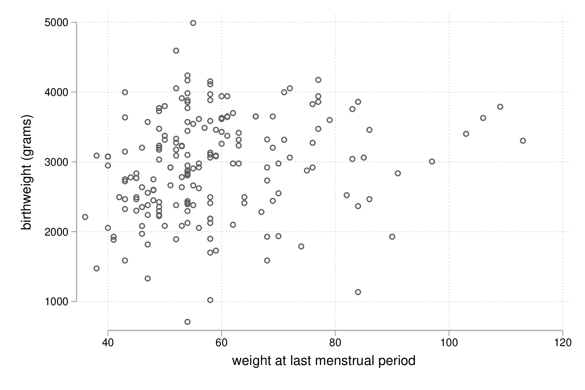
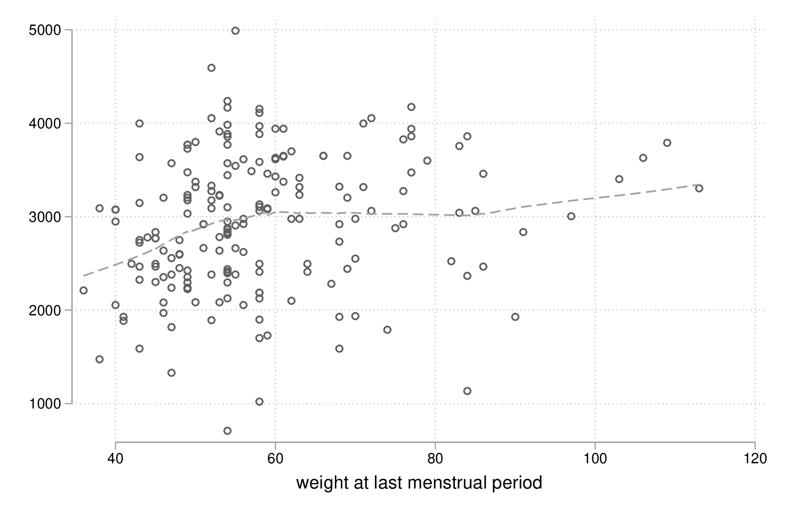
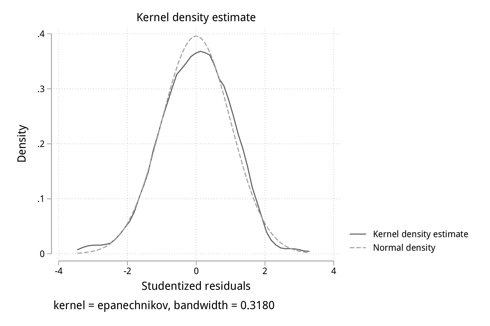
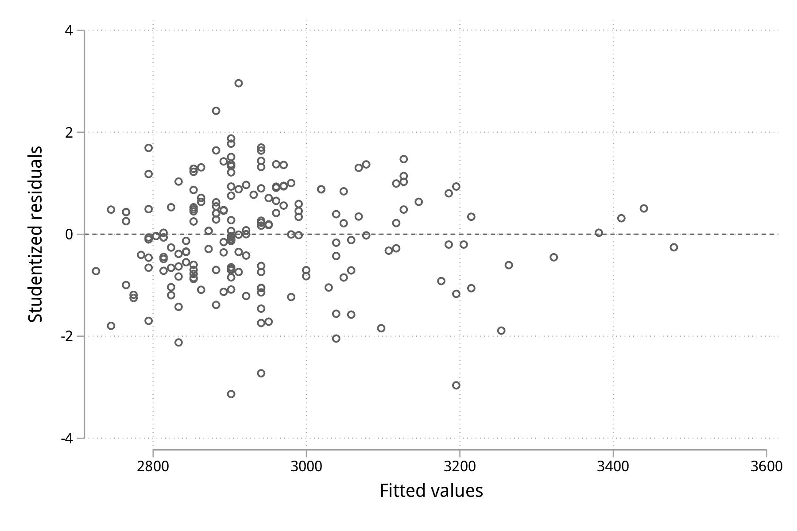

Stata : modélisation statistique
Table des matières
Dans cet exposé, on s’intéressera à la construction de modèles de régression explicatifs ou prédictifs.
Il existe un très bon ouvrage traitant du modèle linéaire généralisé, à présent dans sa quatrième édition et publié chez Stata Press : Generalized Linear Models and Extensions de Hardin & Hilbe.
La mise en oeuvre d’un modèle de régression a déjà été discutée brièvement dans le tutoriel d’introduction à Stata. Dans ce chapitre, on va s’intéresser à l’estimation des paramètres d’un modèle de régression, à la sélection de modèle dans un cadre explicatif, au diagnostic du modèle, et à la prédiction ponctuelle ou par intervalles. On prendra pour base des données observationnelles issues d’enquêtes ou d’études cliniques transversales. Les séries chronologiques et les données longitudinales seront traitées dans des chapitres séparés.
Le modèle de régression linéaire simple
Dans un premier temps, procédons à quelques rappels concernant la régression linéaire simple, la corrélation linéaire et le test de Student. Les notions connexes telles que les associations non linéaires ou les approches non paramétriques seront traitées ultérieurement.
Les données d’illustration peuvent être chargées directement depuis internet à l’aide de la commande webuse. Il s’agit d’une enquête épidémiologique rétrospective dans laquelle on s’intéresse aux facteurs de risque d’un bébé ayant un poids inférieur à la norme, selon les normes américaines des années 90. Ces données sont extensivement analysées dans l’ouvrage de Hosmer & Lemeshow [2]. Au total, le tableau de données contient 11 variables, la variable réponse étant le poids des bébés (bwt) :
webuse lbw describe, simple
set more off webuse lbw (Hosmer & Lemeshow data) describe, simple id low age lwt race smoke ptl ht ui ftv bwt
La relation entre le poids des bébés (en grammes) et le poids des mères (initialement en livres, converti en kilogrammes) est représentée dans la figure suivante sous la forme d’un simple diagramme de dispersion. Pour faciliter la lecture, le poids des mères est converti en kilogrammes, sans modifier le mode de représentation de la variable :
replace lwt = lwt / 2.204623, nopromote
replace lwt = lwt / 2.204623, nopromote (189 real changes made) (189 values truncated because of storage type)
Ensuite, on utilise la commande scatter pour construire le diagramme de dispersion :
set scheme plotplain graph twoway scatter bwt lwt graph export "fig-03-scatter-bwt-lwt.pdf", fontface(DroidSans) replace

Figure 1 : Relation entre le poids des bébés et le poids des mères
Il est tout à fait possible et largement recommendé de superposer une courbe loess [1] sur le diagramme de dispersion précédent afin d’évaluer visuellement les écarts à la linéarité concernant la relation entre ces deux variables. La commande lowess peut être combinée à scatter :
graph twoway scatter bwt lwt || lowess bwt lwt, legend(off) graph export "fig-03-lowess-bwt-lwt.pdf", fontface(DroidSans) replace

Figure 2 : Relation entre le poids des bébés et le poids des mères (courbe loess)
La corrélation entre ces deux variables s’obtient grâce à correlate. Notons que cette commande fonctionne avec deux variables ou une liste de variables de sorte qu’elle pourra également être utilisée pour construire une matrice de corrélation :
summarize bwt lwt correlate bwt lwt
summarize bwt lwt
Variable | Obs Mean Std. Dev. Min Max
-------------+---------------------------------------------------------
bwt | 189 2944.286 729.016 709 4990
lwt | 189 58.34392 13.88108 36 113
correlate bwt lwt
(obs=189)
| bwt lwt
-------------+------------------
bwt | 1.0000
lwt | 0.1863 1.0000
Voici une formulation simplifiée du modèle de régression linéaire. Soit \(y_i\) la réponse observée sur l’individu \(i\), et \(x_i\) sa valeur observée pour le prédicteur \(x\). Le modèle de régression linéaire s’écrit : \[y_i = \beta_0+\beta_1x_i+\varepsilon_i,\] où \(\beta_0\) représente l’ordonnée à l’origine (intercept) et \(\beta_1\) la pente (\emph{slope}) de la droite de régression, et \(\varepsilon_i\sim\mathcal{N}(0,\sigma^2)\) est un terme d’erreur (résidus, supposés indépendants). En minimisant les différences quadratiques entre les valeurs observées et les valeurs prédites (principe des MCO), on peut estimer les coefficients de régression, \(\widehat\beta_0\) et \(\widehat\beta_1\) : \[\begin{array}{l} \widehat\beta_0 = \bar y - \widehat\beta_1\bar x\\ \widehat\beta_1 = \sum(y_i-\bar y)(x_i-\bar x)/\sum(x_i-\bar x)^2\\ \end{array}\]
Sous \(H_0\), le rapport entre l’estimé de la pente (\(\widehat\beta_1\), de variance \(\frac{\text{SSR}/(n-2)}{(n-1)s_x^2}\)) et son erreur standard suit une loi de Student à \((n-2)\) degrés de liberté.
Les paramètres d’un tel modèle de régression, \(\widehat\beta_0\) et \(\widehat\beta_1\), peuvent être estimés grâce à la commande regress, en indiquant la variable à prédire et la ou les variables explicatives. Pour un modèle de régression linéaire simple, on se retrouve donc avec l’expression la plus simple qui soit :
regress bwt lwt
regress bwt lwt
Source | SS df MS Number of obs = 189
-------------+---------------------------------- F(1, 187) = 6.72
Model | 3467517.36 1 3467517.36 Prob > F = 0.0103
Residual | 96447781.2 187 515763.536 R-squared = 0.0347
-------------+---------------------------------- Adj R-squared = 0.0295
Total | 99915298.6 188 531464.354 Root MSE = 718.17
------------------------------------------------------------------------------
bwt | Coef. Std. Err. t P>|t| [95% Conf. Interval]
-------------+----------------------------------------------------------------
lwt | 9.783793 3.773317 2.59 0.010 2.340054 17.22753
_cons | 2373.461 226.263 10.49 0.000 1927.105 2819.817
------------------------------------------------------------------------------
Les résultats fournis par regress se composent de deux tableaux : le tableau d’analyse de variance du modèle de régression, qui peut être supprimé via l’option noheader, et le tableau des coefficients de régression. La ligne _cons désigne le terme d’ordonnée à l’origine, \(\widehat\beta_0\). Le résultat du test de Student associé à lwt (\(\widehat\beta_1\)) peut se retrouver manuellement une fois que l’on a extrait les valeurs d’intérêt :
local tstat = _b[lwt] / _se[lwt] display "t = " %4.2f `tstat' " p = " %4.3f 2*ttail(187, `tstat')
local tstat = _b[lwt] / _se[lwt] display "t = " %4.2f `tstat' " p = " %4.3f 2*ttail(187, `tstat') t = 2.59 p = 0.010
La commande predict permet non seulement de calculer les valeurs ajustées du modèle mais également les résidus du modèle ainsi que d’autres statistiques utiles pour diagnostiquer la qualité d’ajustement du modèle de régression.
predict double yhat predict double rs, rstudent summarize rs
predict double yhat
(option xb assumed; fitted values)
predict double rs, rstudent
summarize rs
Variable | Obs Mean Std. Dev. Min Max
-------------+---------------------------------------------------------
rs | 189 -.0010581 1.008052 -3.133601 2.961918
graph twoway kdensity rs graph export "fig-03-kdensity-rs.pdf", fontface(DroidSans) replace

Figure 3 : Distribution des résidus studentisés
Le graphique suivant est plus informatif car il resneigne à la fois sur la distribution des résidus et la corrélation entre les valeurs prédites par le modèle et ces derniers, qui selon l’hypothèse du modèle doit être nulle.
graph twoway scatter rs yhat, yline(0) graph export "fig-03-scatter-rs-yhat.pdf", fontface(DroidSans) replace

Figure 4 : Relation entre valeurs ajustées et résidus